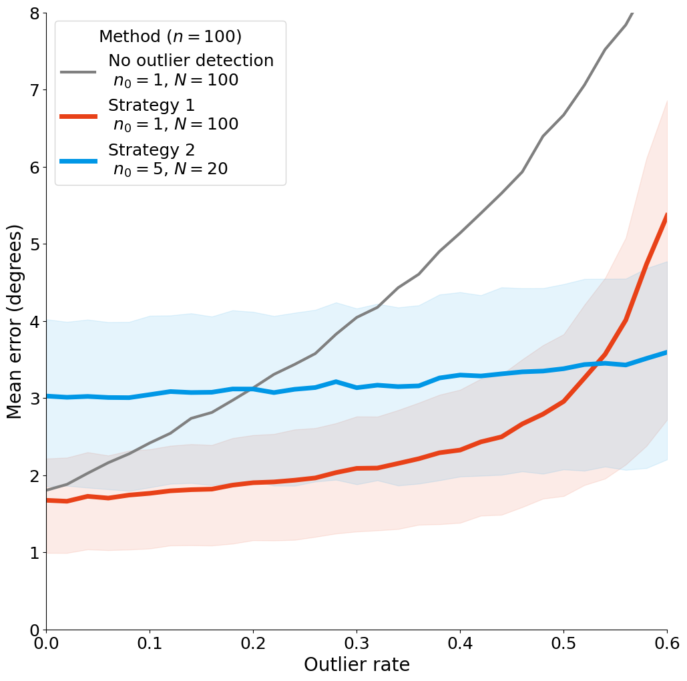

Figure 3: Intersection of errors#
import numpy as np
import pandas as pd
import matplotlib.pyplot as plt
import seaborn as sns
from scipy.interpolate import InterpolatedUnivariateSpline
import smpsite as smp
%matplotlib inline
df = pd.read_csv('../../outputs/fig3d_5000sim_summary.csv')
df
| Unnamed: 0 | Unnamed: 1 | error_angle_mean | error_angle_median | error_angle_25 | error_angle_75 | error_angle_95 | error_angle_std | error_angle_S2 | error_vgp_scatter | ... | N | n0 | kappa_within_site | site_lat | site_long | outlier_rate | secular_method | kappa_secular | ignore_outliers | total_simulations | |
|---|---|---|---|---|---|---|---|---|---|---|---|---|---|---|---|---|---|---|---|---|---|
| 0 | 0 | 0 | 3.007371 | 2.812011 | 1.817102 | 3.984293 | 5.972956 | 1.591223 | 11.575765 | 1.963166 | ... | 20 | 5 | 50 | 30.0 | 0.0 | 0.06 | G | NaN | True | 5000 |
| 1 | 1 | 0 | 1.674369 | 1.572390 | 0.992247 | 2.215238 | 3.343781 | 0.893670 | 3.601998 | 4.063939 | ... | 100 | 1 | 50 | 30.0 | 0.0 | 0.00 | G | NaN | vandamme | 5000 |
| 2 | 2 | 0 | 5.944138 | 5.464739 | 3.456442 | 7.867387 | 11.994503 | 3.282057 | 46.102518 | 10.720174 | ... | 20 | 5 | 50 | 30.0 | 0.0 | 0.30 | G | NaN | False | 5000 |
| 3 | 3 | 0 | 3.132695 | 2.916515 | 1.863807 | 4.135228 | 6.335359 | 1.695366 | 12.687471 | 33.488342 | ... | 100 | 1 | 50 | 30.0 | 0.0 | 0.20 | G | NaN | False | 5000 |
| 4 | 4 | 0 | 1.879239 | 1.752972 | 1.139824 | 2.499530 | 3.687284 | 0.999187 | 4.529712 | 4.391926 | ... | 100 | 1 | 50 | 30.0 | 0.0 | 0.10 | G | NaN | True | 5000 |
| ... | ... | ... | ... | ... | ... | ... | ... | ... | ... | ... | ... | ... | ... | ... | ... | ... | ... | ... | ... | ... | ... |
| 181 | 181 | 0 | 5.895170 | 5.429353 | 3.436594 | 7.788003 | 11.850008 | 3.244385 | 45.276954 | 7.106347 | ... | 20 | 5 | 50 | 30.0 | 0.0 | 0.38 | G | NaN | vandamme | 5000 |
| 182 | 182 | 0 | 3.113708 | 2.942645 | 1.862477 | 4.105940 | 6.106538 | 1.637183 | 12.375009 | 2.090176 | ... | 20 | 5 | 50 | 30.0 | 0.0 | 0.24 | G | NaN | True | 5000 |
| 183 | 183 | 0 | 2.543727 | 2.365439 | 1.538118 | 3.382425 | 4.994684 | 1.353327 | 8.301677 | 24.887777 | ... | 100 | 1 | 50 | 30.0 | 0.0 | 0.12 | G | NaN | False | 5000 |
| 184 | 184 | 0 | 10.411591 | 9.415827 | 5.874237 | 13.914665 | 21.893309 | 6.225964 | 147.156100 | 28.764447 | ... | 20 | 5 | 50 | 30.0 | 0.0 | 0.54 | G | NaN | False | 5000 |
| 185 | 185 | 0 | 1.702919 | 1.598605 | 1.027170 | 2.254942 | 3.340235 | 0.899881 | 3.709557 | 3.725128 | ... | 100 | 1 | 50 | 30.0 | 0.0 | 0.06 | G | NaN | vandamme | 5000 |
186 rows × 21 columns
df_true = df[(df.n0==5) & (df.ignore_outliers=="True")].sort_values(by="outlier_rate")
df_false = df[(df.n0==1) & (df.ignore_outliers=="False")].sort_values(by="outlier_rate")
df_vandamme = df[(df.n0==1) & (df.ignore_outliers=="vandamme")].sort_values(by="outlier_rate")
df_true["error_kappa_theoretical"] = df_true.apply(lambda row: smp.kappa_theoretical(smp.Params(N=row.N,
n0=row.n0 * (1 - row.outlier_rate),
kappa_within_site=row.kappa_within_site,
site_lat=row.site_lat,
site_long=row.site_long,
outlier_rate=0.0,
secular_method=row.secular_method,
kappa_secular=row.kappa_secular)), axis=1, result_type='expand')
df_vandamme["error_kappa_theoretical"] = df_vandamme.apply(lambda row: smp.kappa_theoretical(smp.Params(N=row.N,
n0=row.n0,
kappa_within_site=row.kappa_within_site,
site_lat=row.site_lat,
site_long=row.site_long,
outlier_rate=row.outlier_rate,
secular_method=row.secular_method,
kappa_secular=row.kappa_secular)), axis=1, result_type='expand')
df_true["error_angle_theoretical"] = df_true.apply(lambda row: float(smp.kappa2angular(row.error_kappa_theoretical)), axis=1)
df_vandamme["error_angle_theoretical"] = df_vandamme.apply(lambda row: float(smp.kappa2angular(row.error_kappa_theoretical)), axis=1)
fig, ax = plt.subplots(figsize=(12,12))
#sns.lineplot(ax=ax, data=df, x="outlier_rate", y="error_angle_mean", hue="ignore_outliers", lw=5, palette=["#e84118", "#0097e6"])
sns.lineplot(ax=ax, data=df_false, x="outlier_rate", y="error_angle_mean", lw=3, label="No outlier detection \n $n_0=1$, $N=100$", color='grey')
sns.lineplot(ax=ax, data=df_vandamme, x="outlier_rate", y="error_angle_mean", lw=5, label="Strategy 1 \n $n_0=1$, $N=100$", color="#e84118")
sns.lineplot(ax=ax, data=df_true, x="outlier_rate", y="error_angle_mean", lw=5, label="Strategy 2 \n $n_0=5$, $N=20$", color="#0097e6")
# sns.lineplot(ax=ax, data=df_vandamme, x="outlier_rate", y="error_angle_theoretical", lw=2, label="Vandamme Theory", color="#e84118")
# sns.lineplot(ax=ax, data=df_true, x="outlier_rate", y="error_angle_theoretical", lw=2, label="Perfect detection ($n_0=5$)", color="#0097e6")
plt.fill_between(df_vandamme.outlier_rate, df_vandamme.error_angle_25, df_vandamme.error_angle_75, color="#e84118", alpha=0.1)
plt.fill_between(df_true.outlier_rate, df_true.error_angle_25, df_true.error_angle_75, color="#0097e6", alpha=0.1)
plt.xlabel("Outlier rate", fontsize=20)
plt.ylabel("Mean error (degrees)", fontsize=20)
plt.yticks(fontsize=18)
plt.xticks(np.arange(0, 0.70, 0.1), fontsize=18)
plt.xlim(0, 0.6)
plt.ylim(0, 8)
plt.legend(title="Method ($n=100$)", loc="upper left", fontsize=18, title_fontsize=18)#, labels=["Strategy 1 ($n_0=1$)", "Strategy 2 ($n_0=5$)"])
ax.spines[['right', 'top']].set_visible(False)
# plt.savefig("Figure3d.pdf", format="pdf", bbox_inches='tight')
# plt.savefig("Figure3d.png", format="png", bbox_inches='tight')
